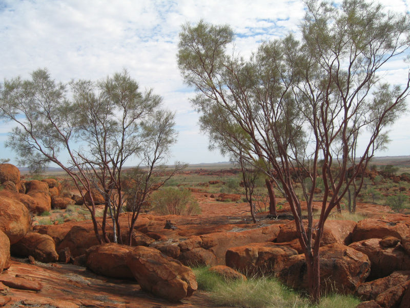
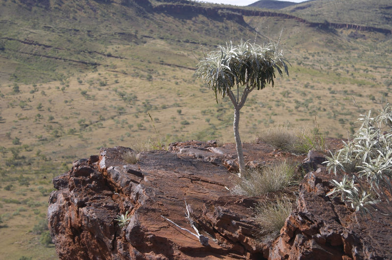
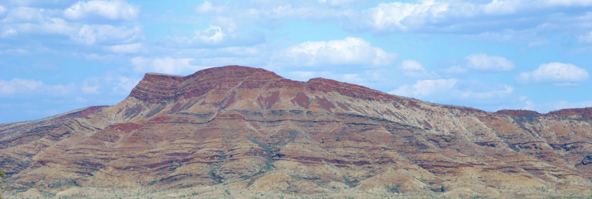
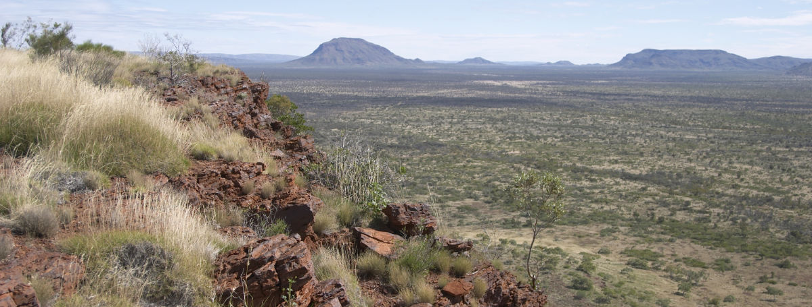
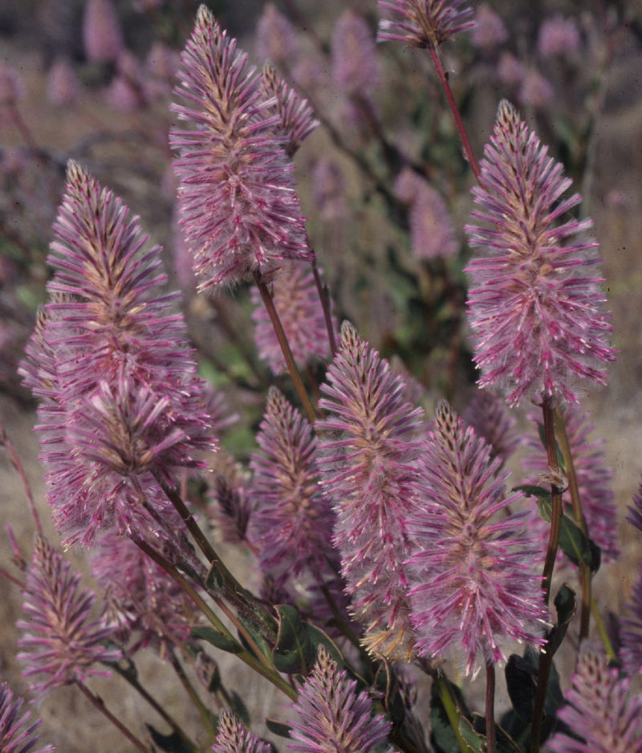
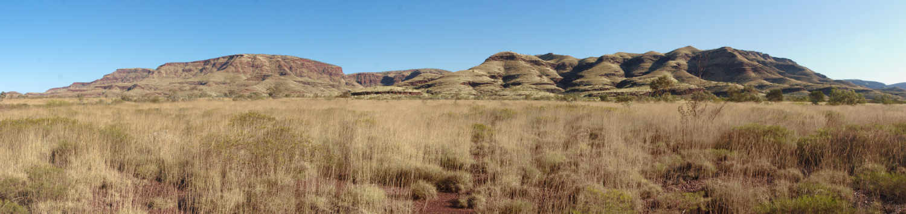
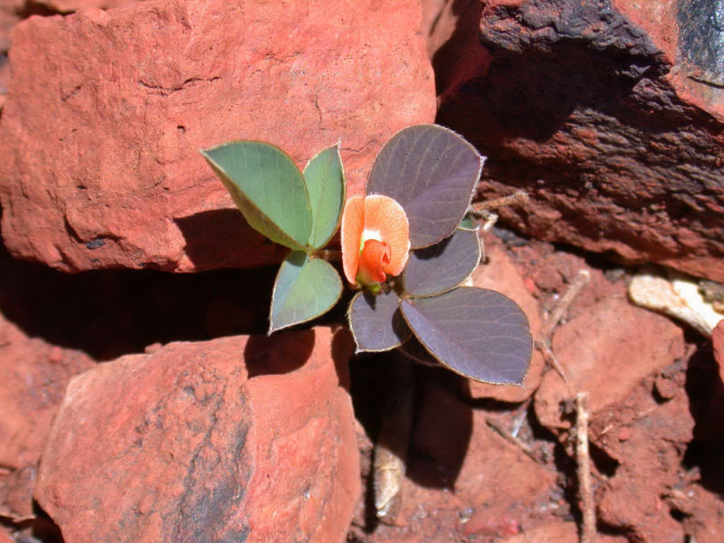

Dales Gorge by Robyn Jay. Licensed under CC BY 2.0

Acacia leeuweniana by Stephen van Leeuwen. Licensed under CC BY 2.0

Astrotricha hamptonii by Stephen van Leeuwen. Licensed under CC BY 2.0

Hamersley Range by Stephen van Leeuwen. Licensed under CC BY 2.0

Mt. Bruce from Dinner Hill by Stephen van Leeuwen. Licensed under CC BY 2.0

Ptilotus exaltatus by Stephen van Leeuwen. Licensed under CC BY 2.0

Karijini Escarpment at Wittenoom by Stephen van Leeuwen. Licensed under CC BY 2.0

Tephrosia sp. Cathedral Gorge by Stephen van Leeuwen. Licensed under CC BY 2.0
Dales Gorge by Robyn Jay. Licensed under CC BY 2.0

Pilbara Wreck by Robyn Jay. Licensed under CC BY 2.0


Kennedy Ranges by Robyn Jay. Licensed under CC BY 2.0

Mount Augustus by Robyn Jay. Licensed under CC BY 2.0

View S of Karijini NP on road from Auski to Wittenoom, Western Australia by Jeff Crisdale. Licensed under CC BY 2.0

Paraburdoo Mine, Western Australia by Fæ/Public Domain Images. Licensed under CC0

A stormy sunset at the Brockman 4 mine camp in the Pilbara region of Western Australia. by Calistemon (own work). Licensed under CC BY-SA 3.0

An iron ore train loading at the Brockman 4 mine, Western Australia. by Calistemon (own work). Licensed under CC BY-SA 3.0

A Reclaimer parked up at the Brockman 4 mine in the Pilbara region of Western Australia. by Calistemon (own work). Licensed under CC BY-SA 3.0

Banded Iron Formation of the Dales Gorge Formation SE of Pannawonica, Pilbara, WA. by Geomartin (own work). Licensed under CC BY-SA 3.0

The plant at the Brockman 4 mine in the Pilbara region of Western Australia. by Geomartin (own work). Licensed under CC BY-SA 3.0

Pilbara desert peas. by Esther1721. Licensed under CC0 1.0